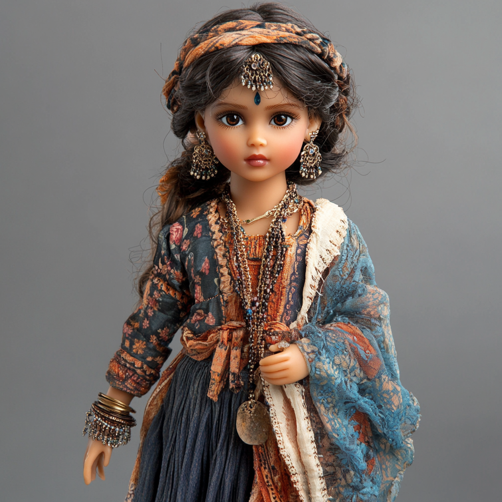

History made personal
Stories are written from childhood moments, not distant textbook summaries. A heroine becomes someone a child can understand, question, and befriend.
Maitri is a story-first companion doll universe inspired by remarkable women from India. Each character helps children discover courage, curiosity, kindness, and belonging through stories they can grow up with.

The story universe
Maitri begins with story attachment: children meet the character, learn her choices, and begin asking, "What would she do?" before the doll is ever launched.
Stories are written from childhood moments, not distant textbook summaries. A heroine becomes someone a child can understand, question, and befriend.
18-inch friends with varied skin tones, hair types, clothing references, and regional identity.
Chapter-led stories that connect history, emotion, values, and child-friendly imagination.
Worksheets and parent prompts convert reading into reflection, play, and conversation.
Courage, compassion, leadership, resilience, and curiosity as everyday choices.
First character reveal
Manu, inspired by Rani Laxmibai, anchors Maitri's first story arc. Her world teaches that courage can look like asking a hard question, getting back on the horse, being kind first, and standing close to the people you love.
Read the first letterBadal waits near the river as Manu hears the clip-clop of horses.
The girl who became a queen.
"Courage does not wait until you grow up. It lives in you right now."
Maitri Circle
The Maitri Circle gives families a reason to join now: early character letters, beta reading, parent-child prompts, school pilots, and founder updates.
Letters from Maitri with character chapters, prompts, and behind-the-scenes notes.
Parents and children help shape stories before publication and launch.
Families meet each heroine through clues, story moments, and visual previews.
Simple conversation starters that turn values into daily family language.
Schools and workshops
Maitri workshops can turn one character story into a 45-60 minute session for children, with read-alouds, value discussions, worksheets, and take-home prompts.
Demand validation
Maitri should measure real signals before production scale: waitlist quality, beta-reader feedback, workshop interest, price comfort, character preference, and preorder intent.
Founder access
Join for early story letters, beta reader invitations, school pilot updates, and first access when founder reservations open.